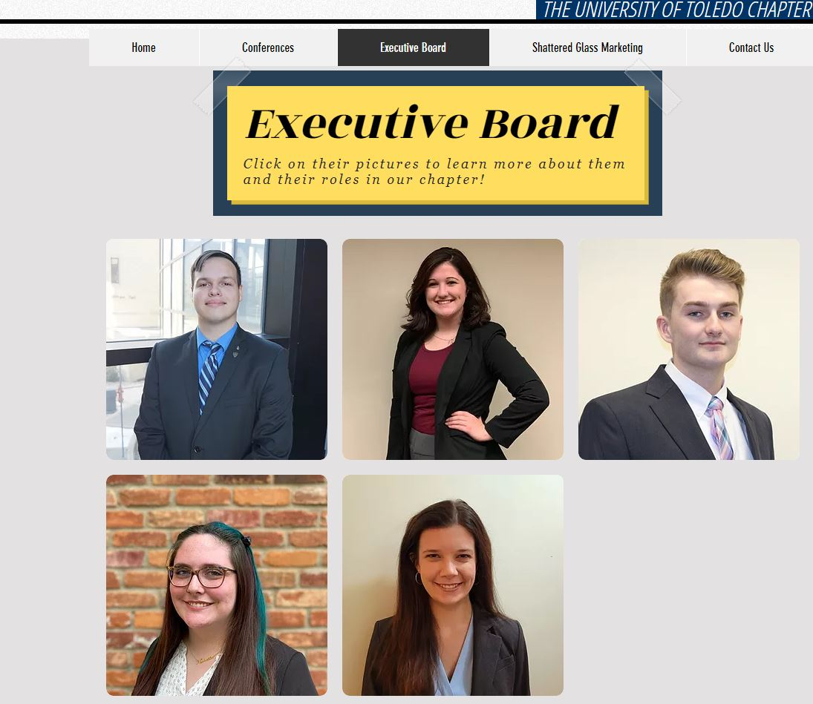
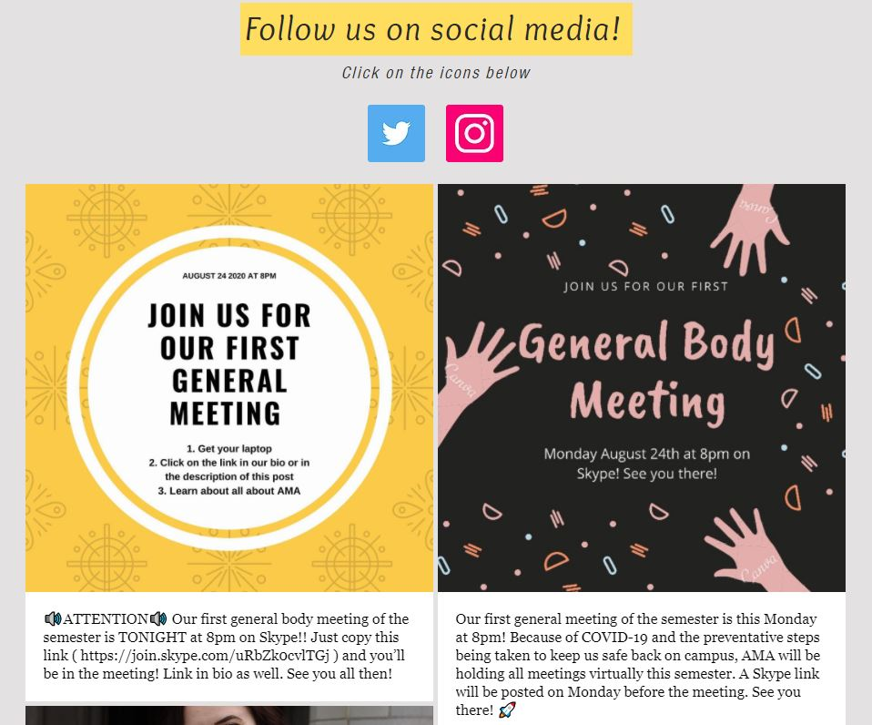
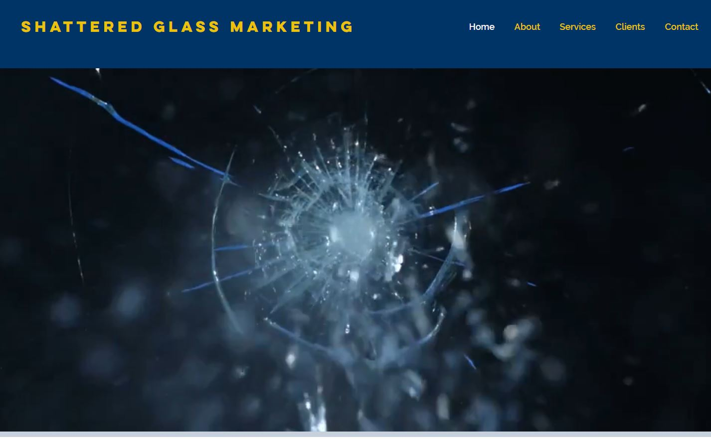

Vice President of Membership
One of my objectives was to create a recruitment campaign for the spring 2020 semester. I decided to make a video about the organization as it allows the organization to showcase it's opportunities better than a standard flyer. I am the only person that worked on this project and had fun learning Adobe Premier to create this video. I also used Photoshop and After Effects for some of the graphics seen in the video!
Another experience I gained from my time in AMA is updating our chapter website. As an organization we follow best practices in web design with modern and responsive sites. We also have a student run marketing agency that is known as shattered glass marketing and is available from our chapter website.
  